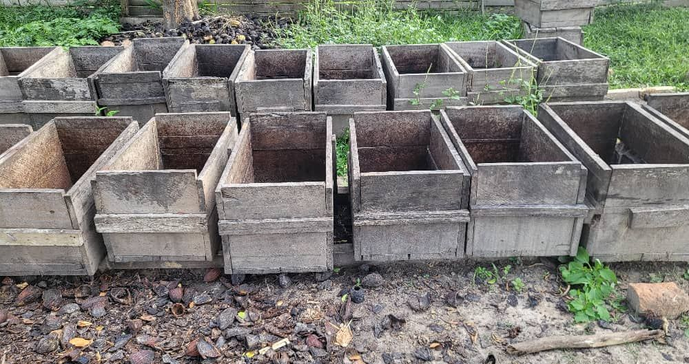
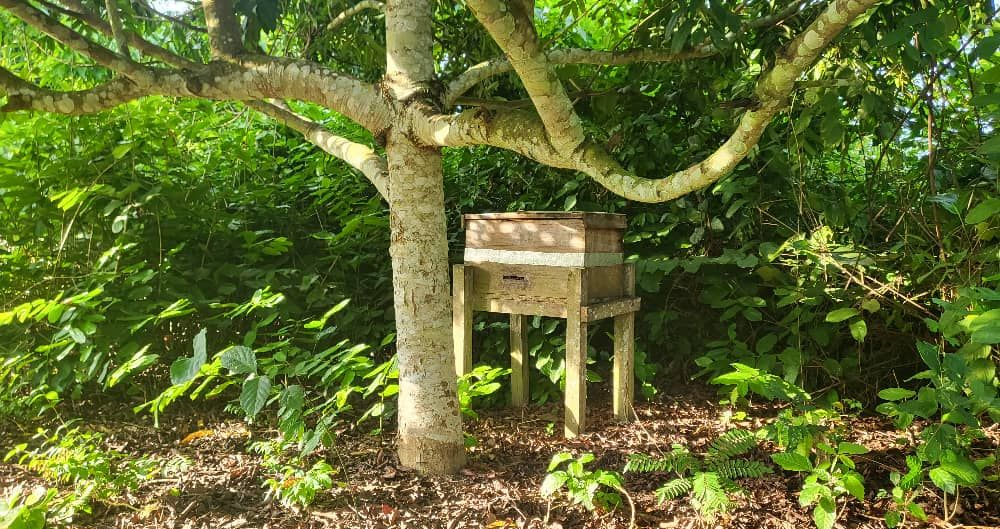

Come to Ibenga, see it with your own eyes.
The farm welcomes visitors, students and project leaders. You walk the plantation, watch the pressing, taste.
A day on the farm.
The schedule below is a proposal. It must be validated, and lived through once, before being promised.

The plantation
Oil palms, cocoa trees, safou trees, apiaries at the forest edge. You walk, you pick, we explain what grows and when.

The workshop
Oil pressing, cocoa fermentation, depending on the season. You watch, you smell, you understand why it is done here.

The river
The loading of the canoes, the village. You taste what you saw growing.

Getting there, staying.
- From Brazzaville[ flight to Impfondo, to be confirmed ]
- From Impfondo[ road or river · duration to be provided ]
- Accommodation[ in the village or at Enyellé, to be confirmed ]
- Recommended season[ month to be confirmed ]
- Formalities[ to be specified ]
None of these lines is given on the current website. They are to be filled in by the farm before going live.
Visit, immersion, training.
Three lengths proposed, to be confirmed by the farm: what it can really host, at what price, and how many people at a time.
- The visitOne day · [ price ]
- The immersionThree days · [ price ]
- The training[ length ] · cocoa or beekeeping · [ price ]
Plan a visit
Tell us who you are and what you are coming to see. The farm replies with the possible dates.
SendThe form will be activated soon. Meanwhile, call +242 05 536 16 05.